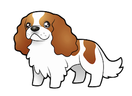
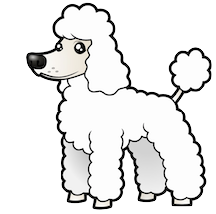
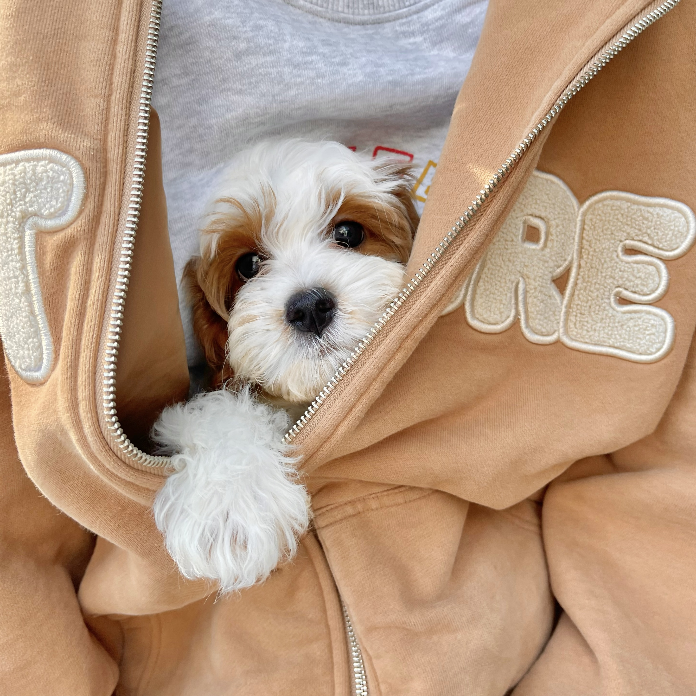

For people who are hesitating about getting a puppy
During the week I picked a puppy from the breeder with my roommate and it was a Cavapoo, a mixed breed dog--a cross between the
Cavalier King Charles Spaniel and Poodle dog breeds.
When choosing among a group of dogs, we saw him at first sight, maybe this is fate! With big round eyes staring straight at us, I was instantly captured by his cute expression and decided it washim!
We named himPupu, which in our language means to throw into one's arms. He was only two months old, with curly brown and white fur, and he was warm to hold.
When we took him home we realized the problems we were about to face:
- Clean up the piss and shit all over the floor
- Take him out for a walk every day
- Take regular baths
- Spend time playing with him
- Clean up the pads
- Woke up by his "morning calls"
- Take it to the hospital when sick
- To be explored...
But at the same time you also get a puppy that:
- Always follow you
- Love to sleep at your feet
- Watching TV with you
- Always wagging his tail at you
- Never refuse your hug
- Even if you yell at him it will still love you
- Winks to you
- Always with you
- Can guard the door
- Protecting you
- ...
For us, there may be many people who can accompany, but the dog only has us. We do not unilaterally own the dog, but accompany each other.
So if you decide to own a puppy, think carefully ! ! !
As newbies, we are still figuring out the most comfortable way to get along with Pupu.
Our journey with Pupu has just begun, please let us go together in the future!!